Phase 02 private lab review. Native scrolling, server-rendered content, optional product 3D, keyboard focus, reduced motion and graceful fallbacks. All device interfaces are concepts, not client work.
Silent Chrome walkthrough. Software WebGL was used for automated QA; this is not a real-device FPS or Web Vitals benchmark.
Motion results · Public page regression · Disabled-lab 404 proof · Served HTML
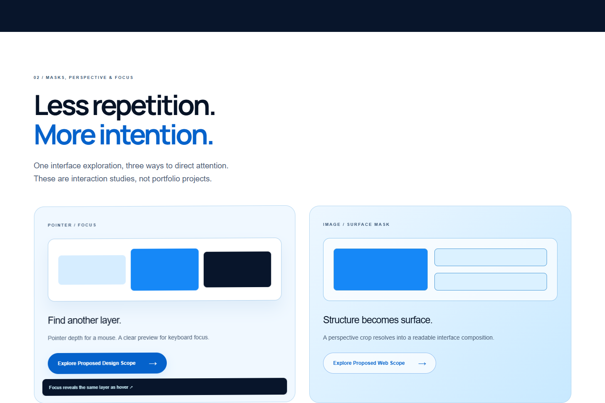
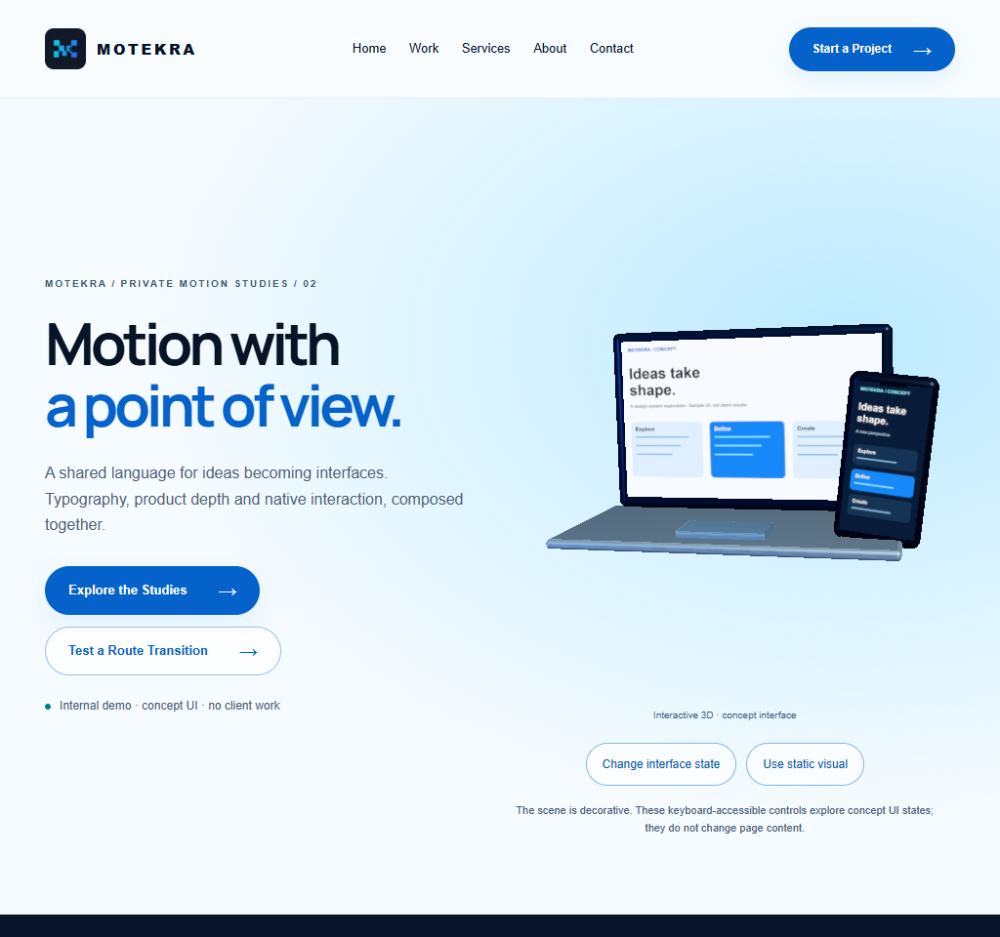
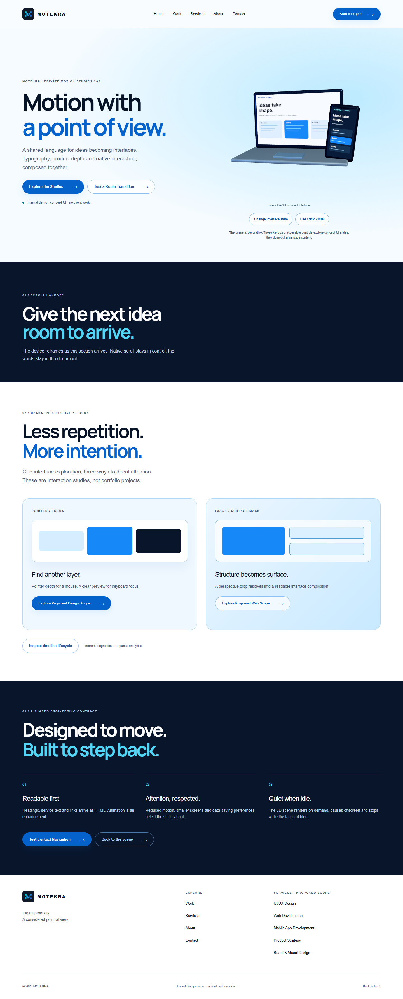
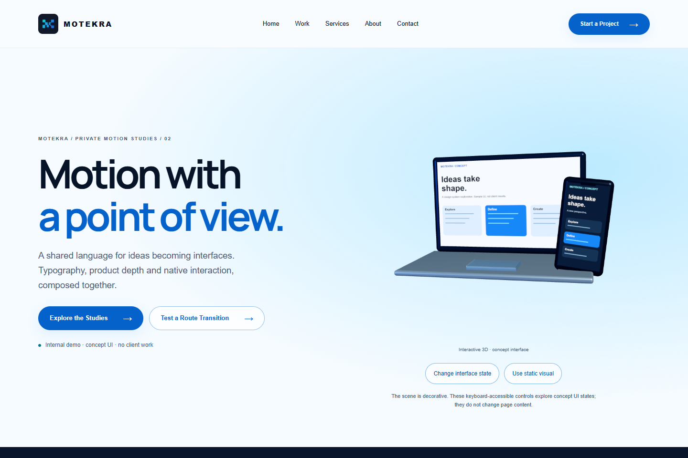
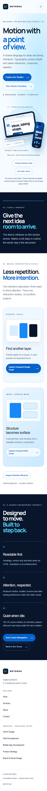
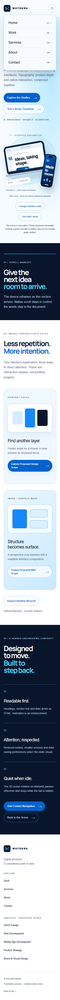
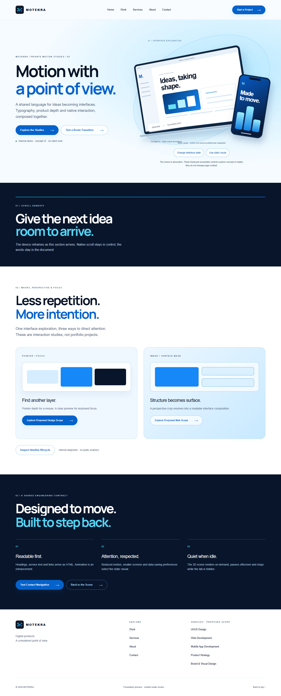
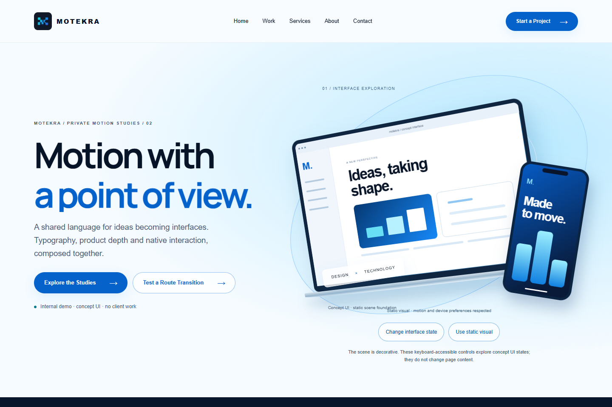
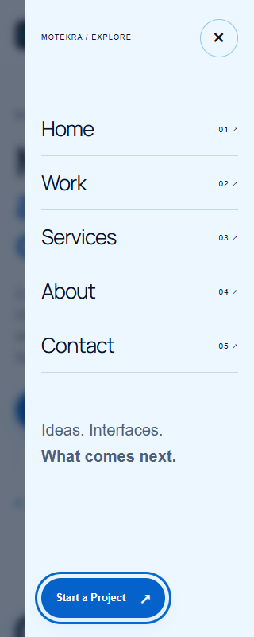
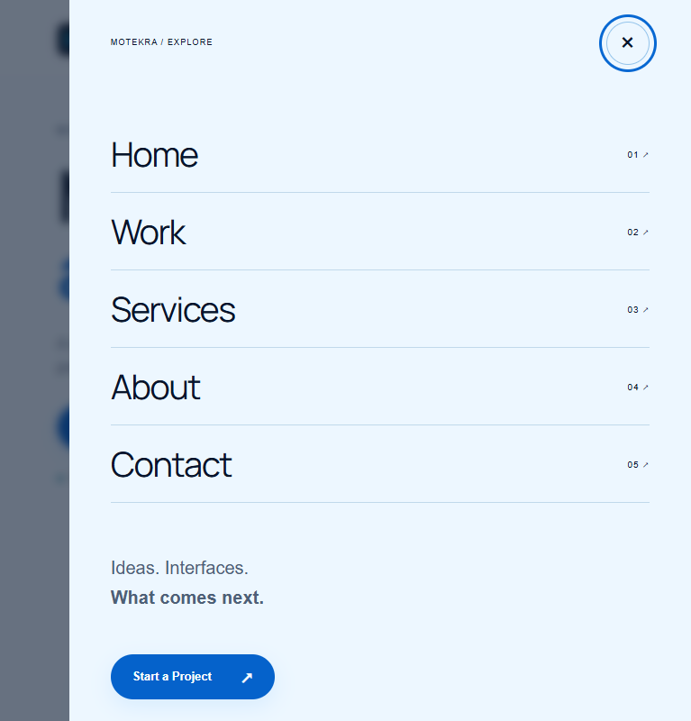
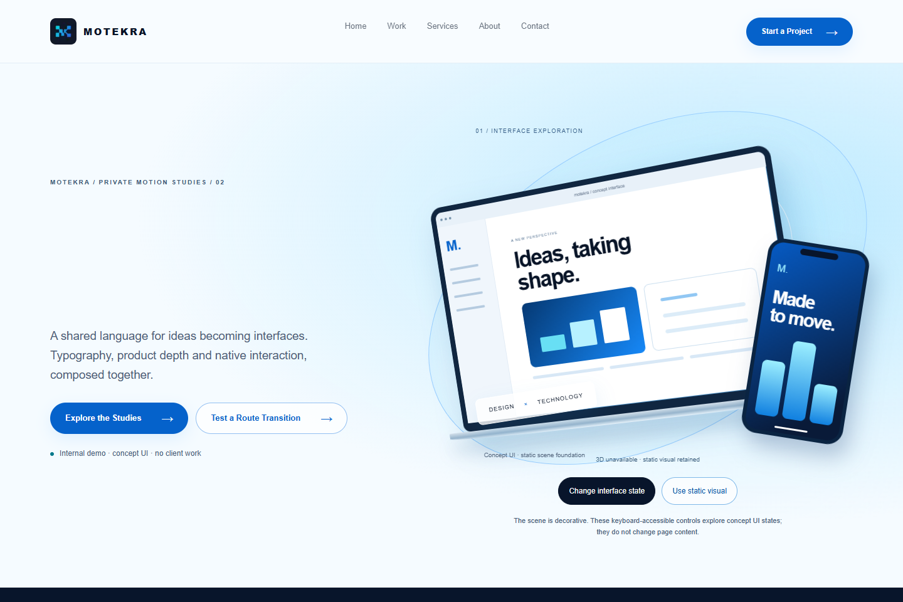